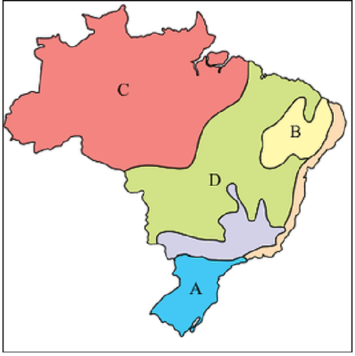
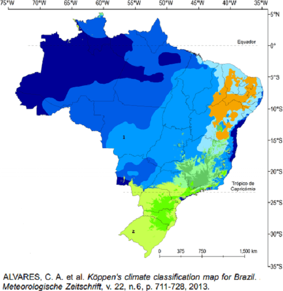
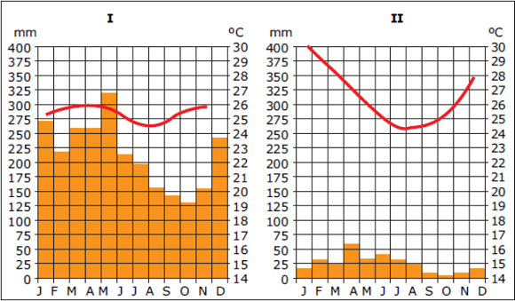

Conteúdo: Clima; Tempo; Tipos de Clima: Equatorial, Tropical, subtropical.
Objetivo: Identificar e localizar os principais climas do Brasil. Equatorial, tropical, tropical úmido (litorâneo), tropical de altitude, tropical semiárido, subtropical.
Questão 01
(2019) Enumere abaixo de acordo com os tipos climáticos brasileiros e suas características.
1 – Clima Equatorial
2 – Clima Tropical
3 – Clima Subtropical
4 – Clima Semiárido
( ) Predominante no território brasileiro, ocupa a parte central com duas estações bem definidas: uma seca e outra chuvosa.
( ) Localiza-se nas proximidades da linha do Equador. Possui chuvas abundantes o ano todo.
( ) A quantidade de chuva não varia muito ao longo do ano, mas as temperaturas mudam constantemente.
( ) Caracterizado por baixa umidade, pouca chuva e elevadas temperaturas.
Assinale a sequência correta.
a) 1, 3, 4, 2.
b) 2, 1, 3, 4.
c) 2, 1, 4, 3.
d) 3, 2, 1, 4.
e) 4, 1, 3, 2.
Questão 02
(2019) Abrange os estados de Minas Gerais e Goiás, parte de São Paulo, Mato Grosso do Sul, parte da Bahia, do Maranhão, do Piauí e do Ceará. É um clima quente e semiúmido, com uma estação chuvosa (verão) e outra seca (inverno). Apesar das temperaturas elevadas no verão, o inverno apresenta temperaturas amenas, o que torna a amplitude térmica anual elevada.
O texto se refere ao clima:
a) Clima tropical.
b) Clima subtropical.
c) Clima tropical úmido.
d) Clima tropical semiárido.
e) Clima equatorial úmido.
Questão 03
(BRASIL ESCOLA 2022) Em relação aos tipos de clima no Brasil, marque qual clima abrange uma porção maior do território e melhor caracteriza o país:
a) – Clima Semiárido.
b) – Clima Equatorial.
c) – Clima Subtropical.
d) – Clima Tropical.
e) – Clima Desértico.
Comentário:
a) FALSO – O clima semiárido abrange somente uma pequena parte do Nordeste.
b) FALSO – Apesar de abranger toda a Amazônia brasileira, ainda assim não representa nem metade da característica climática brasileira.
c) FALSO – Abrange somente os estados abaixo do trópico de Capricórnio, e pequena porção de São Paulo.
d) VERDADEIRO – O clima tropical é o que melhor caracteriza o país e abrange maior porção do território. Ele pega todo o centro-norte do país, algumas faixas litorâneas e um pedaço da região Norte.
e) No Brasil não existe esse tipo climático.
Questão 04
(UFRR 2018) O vasto território brasileiro é fortemente marcado pela presença de diferentes tipos climáticos. Embora a nomenclatura e a classificação desses tipos climáticos possam variar em razão de diferentes autores e bibliografias, podemos destacar que os climas presentes na maior parte do interior do Nordeste (i) e na maior parte da região Norte do Brasil (ii), respectivamente, possuem às seguintes características:
a) Temperaturas amenas e chuvas bem distribuídas durante todo o ano (i); temperaturas elevadas e muita umidade (ii).
b) Temperaturas elevadas com chuvas escassas e irregulares ao longo do ano (i); temperaturas elevadas e muita umidade (ii).
c) Temperaturas elevadas com chuvas escassas e irregulares ao longo do ano (i); temperaturas baixas com escassez de chuva no outono e no inverno (ii).
d) Temperaturas amenas e chuvas bem distribuídas durante todo o ano (i); temperaturas amenas com pouca chuva no outono e no inverno (ii).
e) Temperaturas elevadas com umidade durante todo o ano vinda do oceano (i); temperaturas amenas, fortes chuvas no verão e aridez no inverno (ii).
Questão 05
(UNICAMP 2015) Em algumas localidades do Estado de Santa Catarina, costuma-se registrar neve durante o período de inverno, caso de São Joaquim e de outros municípios da região serrana.
Qual das alternativas abaixo associa corretamente dois fatores geográficos que favorecem a ocorrência do fenômeno na região indicada?
a) Altitudes acima de 1.000 metros; latitude entre 23º S e 66° S.
b) Altitudes abaixo de 1.000 metros; latitude entre 66° S e 90° S.
c) Altitudes acima de 1.000 metros; latitude entre 23° N e 66° N.
d) Altitudes abaixo de 1.000 metros; latitude entre 66° N e 90° N.
a) Correta. Para que ocorra a precipitação em forma de neve (nival) é necessário que a temperatura na atmosfera esteja em torno de 0 ºC. Tal condição é encontrada com maior frequência nas regiões temperadas/extratropicais e polares ou ainda em áreas de elevada altitude independentemente da latitude. A cidade de São Joaquim (SC) localiza-se no Planalto Serrano Catarinense Brasileiro em uma altitude de aproximadamente 1350 metros e na latitude aproximada de 28º Sul. Tais condições de altimetria e latitudes combinadas permitem a precipitação nival com mais frequência nessa região.
b) Incorreta. Pois de fato a cidade de São Joaquim localiza-se acima de 1000 metros de altitude, porém em latitude inferior à 66º S.
c) Incorreta. Pois apesar de a cidade de São Joaquim localizar-se acima de 1000 metros de altitude e a sua localização é no hemisfério Sul e não o Norte como afirma a alternativa.
d) Incorreta. Pois a cidade de São Joaquim localiza-se acima de 1000 metros de altitude e a sua localização é no hemisfério Sul.
Questão 06
(UNESP 2013) Leia a descrição de quatro grandes tipos climáticos do Brasil e, em seguida, examine o mapa, que representa a divisão regional do país em grandes tipos climáticos.
1. Chuvas entre 2 000 e 3 000 mm e elevadas temperaturas durante todo o ano, com médias de 26 °C.
2. Regular distribuição das chuvas durante o ano e temperaturas mais amenas, com médias inferiores a 18 °C e esporádica queda de neve.
huvas escassas e irregulares, com precipitações médias de 500 a 700 mm, e temperaturas elevadas, com médias de 28 °C.
4. Duas estações bem marcantes: uma chuvosa e quente, com 1 200 mm de precipitação e médias térmicas de 24 °C, e outra seca e fria, com 200 mm de chuvas e 17 °C de média térmica.

Assinale a alternativa que contém a correta associação entre a descrição climática e sua área de ocorrência.
a) 1D; 2B; 3A; 4C.
b) 1B; 2D; 3C; 4A.
c) 1A; 2C; 3D; 4B.
d) 1C; 2B; 3D; 4A.
e) 1C; 2A; 3B; 4D.
Questão 07
(FURG 2009) O Clima subtropical úmido, no sul do país, é caracterizado por invernos relativamente
Rigorosos, com a ocorrência esporádica de precipitação de neve em determinadas áreas.
Assinale a alternativa que apresenta os fatores climáticos que influenciam a precipitação de neve em determinadas áreas do sul do país.
a) Altitude, maritimidade e continentalidade.
b) Latitude, altitude e maritimidade.
c) Maritimidade, relevo e massas de ar.
d) Latitude, altitude e massa de ar.
e) Depressões, altitude e massas de ar.
Questão 08
(FUVEST 2023) O estado de São Paulo, por suas características climáticas, apresenta, no outono e no inverno, probabilidade de ocorrência de geada.
Com base em seu conhecimento sobre o estado de São Paulo e os fatores que contribuem para a formação de geadas, é correto inferir que a maior ocorrência de geadas no estado de São Paulo está associada
A questão quer saber sobre a relação entre geada e relevo. Essa ligação está relacionada à influência que a topografia (variação do relevo) exerce sobre a temperatura do ar próximo à superfície terrestre. Em áreas de relevo mais elevado, como montanhas e serras, o ar frio tende a se acumular nas partes mais baixas durante a noite, formando o que é conhecido como inversão térmica. Essa inversão térmica ocorre porque o ar frio é mais denso e tende a descer para áreas mais baixas, enquanto o ar mais quente sobe para regiões mais altas. Durante a noite, quando as temperaturas estão mais baixas, o ar frio que se acumula nas partes baixas do relevo pode resfriar rapidamente, levando à formação de geada. As áreas mais elevadas também estão sujeitas a temperaturas mais baixas devido à maior exposição aos ventos frios e à radiação noturna. Agora ficou mais fácil selecionar a alternativa correta. Tente resolver sem ver a resposta
Resposta: Letra A Às maiores altitudes da Serra da Mantiqueira, que contribuem para reduzir a temperatura do ar.
a) às maiores altitudes da Serra da Mantiqueira, que contribuem para reduzir a temperatura do ar.
b) às baixas altitudes do Vale do rio Ribeira de Iguape, que contribuem para a entrada de ar frio.
c) ao efeito da maritimidade, que injeta ar frio para o continente, diminuindo a temperatura do ar.
d) às grandes extensões do Planalto Ocidental Paulista, que favorecem o acúmulo de ar frio.
e) à ausência de cobertura vegetal em grande parte do território paulista, que potencializa o resfriamento noturno.
a) Esta opção está correta. As maiores altitudes da Serra da Mantiqueira, localizada na divisa entre São Paulo e Minas Gerais, contribuem para a redução da temperatura do ar devido aos efeitos do relevo. A elevação do terreno faz com que o ar resfrie mais rapidamente, favorecendo a formação de geadas, principalmente durante o outono e inverno e, principalmente, somada a influência de massas de ar polares.
b) Esta opção está incorreta, pois as baixas altitudes do Vale do rio Ribeira de Iguape não estão diretamente associadas à maior ocorrência de geadas. Geralmente, áreas de baixa altitude tendem a ser menos suscetíveis a geadas devido à circulação do ar mais ampla, radiação solar mais eficiente e até formação de nuvens que atuam como “cobertor” que retém o calor próximo à superfície.
c) Esta opção está incorreta, pois o efeito da maritimidade geralmente atua no sentido de amenizar as temperaturas, especialmente próximo ao litoral. A entrada de ar frio vindo do mar para o continente pode até diminuir as temperaturas, mas não está diretamente associada à ocorrência de geadas.
d) Esta opção está incorreta, pois as grandes extensões do Planalto Ocidental Paulista não são necessariamente associadas à maior ocorrência de geadas. Embora o Planalto possa experimentar temperaturas mais baixas durante o inverno, outros fatores, como altitude e relevo, desempenham um papel mais significativo na formação de geadas.
e) Esta opção está incorreta, pois a ausência de cobertura vegetal em grande parte do território paulista pode influenciar o resfriamento noturno, mas não é o principal fator associado à ocorrência de geadas. Outros elementos, como altitude e relevo, têm um impacto mais direto na formação de geadas.
Questão 09
(UFMS 2019) O clima é o nome que se dá às condições atmosféricas que costumam ocorrer num determinado lugar. Para conhecer o clima de uma região, é necessário estudar as variações do tempo atmosférico da área durante vários anos seguidos, normalmente 30 anos. O Brasil apresenta a seguinte diversidade de climas:

Assinale a alternativa correspondente aos itens 1 e 2 posicionados no mapa.
a) (1) clima tropical; (2) clima subtropical.
b) (1) clima equatorial; (2) clima tropical.
c) (1) clima tropical; (2) clima equatorial.
d) (1) clima equatorial; (2) clima subtropical.
e) (1) clima subtropical; (2) clima tropical.
Questão 10
(UFU) Observe os diagramas a seguir:

Nos climogramas I e II estão representadas as variações de temperatura e pluviosidade de duas regiões brasileiras.
Após analisá-los, assinale a alternativa correta.
a) O climograma I representa as condições de uma região quente e pouco úmida.
b) O climograma II representa as condições típicas de um clima equatorial.
c) O climograma II representa as condições típicas do semiárido nordestino.
d) O climograma I representa as características do clima de áreas do Sul do Brasil.